Gegenereignis
Mit einem KI-Tutor lernen
Ein KI-Tutor erklärt dir diese Seite und hilft dir bei den Übungen. Wähl deinen Assistenten:
Mit Claude öffnen Mit ChatGPT öffnen Mit Le Chat öffnen
Du nutzt dein eigenes Konto beim Anbieter. Der Assistent ist kein Angebot von lernapps.net: lernapps liefert nur Inhalte und Übungen. Die Wahl gilt für alle Seiten, nur auf diesem Gerät.
Warum?
Manche Ereignisse haben sehr viele günstige Ergebnisse – „mindestens einmal eine 6 bei drei Würfen“ zum Beispiel. Die alle zu zählen dauert ewig. Das Gegenteil ist im Baum oft nur ein einziger Pfad. Wer den Umweg über das Gegenereignis kennt, spart Zeit und Fehler.
Regel
- Gegenereignis
Das Gegenereignis „nicht E“ enthält alle Ergebnisse, die nicht zu E gehören. E und „nicht E“ zusammen decken alles ab.
Die Wahrscheinlichkeiten von E und „nicht E“ ergeben zusammen 1:
Der wichtigste Trick: „mindestens einmal“ rechnet man über das Gegenereignis „kein einziges Mal“.
Beispiel
Keine 6 würfeln
Du würfelst einmal. Wie groß ist die Wahrscheinlichkeit, keine 6 zu würfeln?
- .
- .
Der Trick mit „mindestens einmal“
Du würfelst dreimal. Wie groß ist ?
- Gegenereignis: kein einziges Mal eine 6. Das ist ein einziger Pfad: keine 6, keine 6, keine 6.
- Nach der 1. Pfadregel multiplizierst du entlang des Pfades: .
- .
Ohne den Trick müsstest du 7 Pfade addieren. Mit dem Trick ist es eine Rechnung.
Bild

Der Baum zum dreimaligen Würfeln. Auf jeder Stufe gibt es zwei Zweige: 6 mit 1/6 und „keine 6“ (K) mit 5/6. Orange ist der einzige Pfad des Gegenereignisses „kein einziges Mal 6“: keine 6, keine 6, keine 6, also 5/6 · 5/6 · 5/6 = 125/216. Unter den acht Enden stehen die Pfadwahrscheinlichkeiten: 1/216, 5/216, 5/216, 25/216, 5/216, 25/216, 25/216 und 125/216.
Quelle: Eigene Darstellung der Mathe-Karte. Lizenz: MIT.Video dazu
- Zu dieser Seite gibt es kein eigenes Video. Wie man Pfade multipliziert, zeigt das Video auf der Seite 1. Pfadregel.
- Noch eine Erklärung: Gegenereignis bei serlo.org
Übung
Aufgabe Nr. 1
Aufgabe Nr. 1
Du hast einen normalen Würfel; es zählt nur „6“ oder „keine 6“. Du würfelst 3-mal. Wie groß ist die Wahrscheinlichkeit, dass du mindestens einmal „6“ bekommst?
Das Bild zeigt den Baum; orange ist der einzige Pfad des Gegenereignisses „kein einziges Mal 6“.
P(mindestens einmal) = …
Lösung
Gegenereignis: kein einziges Mal 6.
P(kein Mal 6) = (5/6)³ = 125/216
P(mindestens einmal 6) = 1 − 125/216 = 91/216
Übung
Drei Beispielaufgaben, jede mit ihrer Lösung:
Aufgabe Nr. 1
Die Wahrscheinlichkeit, dass es morgen regnet, ist 0,6. Wie groß ist die Wahrscheinlichkeit, dass es morgen nicht regnet?
Tipp
Regen und kein Regen ergeben zusammen 1.
Lösung
Richtige Antwort: 0,4
Aufgabe Nr. 2
Die Wahrscheinlichkeit, dass es morgen regnet, ist 0,75. Wie groß ist die Wahrscheinlichkeit, dass es morgen nicht regnet?
Tipp
Regen und kein Regen ergeben zusammen 1.
Lösung
Richtige Antwort: 0,25
Aufgabe Nr. 3
Die Wahrscheinlichkeit, dass es morgen regnet, ist 0,35. Wie groß ist die Wahrscheinlichkeit, dass es morgen nicht regnet?
Tipp
Regen und kein Regen ergeben zusammen 1.
Lösung
Richtige Antwort: 0,65